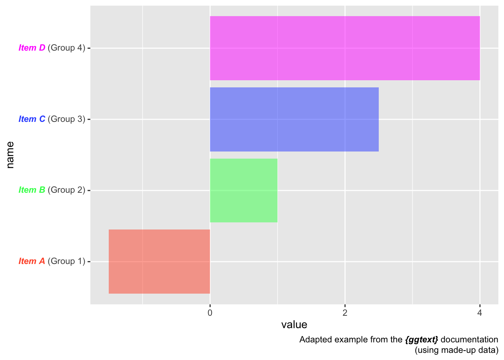
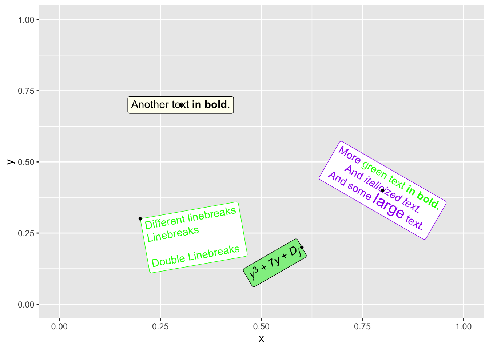

→ Rich Text Formatting
You can use markdown and HTML to format text, including bold, italic,
and colored text.
Example:
library(ggplot2)
library(ggtext)
ggplot(mtcars, aes(wt, mpg)) +
geom_point() +
labs(
title = "Car Weight vs. MPG",
subtitle = "**Bold text**, *italic text*, and <span style='color:#72874EFF;'>**colored text**</span>"
) +
theme(plot.subtitle = element_markdown())

→ ggtext as a legend
Using ggtext, we can change the axis labels so that they
are colored to match the bar colors:
- Inline Coloring:
color defines bar and text colors.name combines item_name and
group with HTML tags for styling:
<i style='color:{color}'>**{item_name}**</i> ({group}).
- Theming:
axis.text.y = element_markdown() applies HTML/CSS
formatting to y-axis labels.
This has direct benefits:
- No Legend Needed: Labels are color-matched to bars,
making the plot intuitive.
- Enhanced Visualization: Improved readability and
aesthetics through direct color association.
library(tidyverse)
library(ggtext)
library(glue)
data <- tibble(
item_name = c("Item A", "Item B", "Item C", "Item D"),
group = c("Group 1", "Group 2", "Group 3", "Group 4"),
value = c(-1.5, 1.0, 2.5, 4.0)
)
data %>%
mutate(
color = c("#FF5733", "#33FF57", "#3357FF", "#FF33FF"),
name = glue("<i style='color:{color}'>**{item_name}**</i> ({group})"),
name = fct_reorder(name, value)
) %>%
ggplot(aes(value, name, fill = color)) +
geom_col(alpha = 0.5) +
scale_fill_identity() +
labs(caption = "Adapted example from the ***{ggtext}*** documentation<br>(using made-up data)") +
theme(
axis.text.y = element_markdown(),
plot.caption = element_markdown(lineheight = 1.2)
)

→ Box around text
ggtext can be used to create boxes around your text in
different styles:
geom_richtext(): Replaces the usual
geom_text() to render the text in label with
special formatting.- The
label entries use:
**bold** for bold text.<br> for line breaks.<span style='color:green'> for colored text.<sup> and <sub> for
superscript and subscript.<span style='font-size:16pt'> for larger
text.
This setup allows the plot to display text with mixed
styles (e.g., bold, colored, italicized) and structured formats
(e.g., line breaks, superscripts) within a single text label.
library(ggplot2)
library(tibble)
library(ggtext)
df <- tibble(
label = c(
"Another text **in bold.**",
"Different linebreaks<br>Linebreaks<br><br>Double Linebreaks",
"*y*<sup>3</sup> + 7*y* + *D*<sub>*j*</sub>",
"More <span style='color:green'>green text **in bold.**</span><br>And *italicized text.*<br>
And some <span style='font-size:16pt; color:purple'>large</span> text."
),
x = c(.3, .2, .6, .8),
y = c(.7, .3, .2, .4),
hjust = c(0.5, 0, 1, 0.5),
vjust = c(0.5, 1, 0.5, 0.5),
angle = c(0, 10, 30, -30),
color = c("black", "green", "black", "purple"),
fill = c("ivory", "white", "lightgreen", "white")
)
ggplot(df) +
aes(
x, y,
label = label, angle = angle, color = color, fill = fill,
hjust = hjust, vjust = vjust
) +
geom_richtext() +
geom_point(color = "black", size = 1) +
scale_color_identity() +
scale_fill_identity() +
xlim(0, 1) +
ylim(0, 1)

Valid HTML/CSS properties
Unfortunatley, ggtext only supports a limited
amount of features. Only the following will work:
- bold text when surrounded by
** →
**some text that will renders bold**
- italic text when surrounded by
* →
*some text that will renders italic*
- color text:
<span> with a
color value in style → <span
style=‘color:green’>green text</span>
- font size:
<span> with a
font-size value in style → <span
style=‘font-size:30px’>large text</span>
- sub or superscript:
<sub> or
<sup> → <sub>subscript</sub> and
<sup>subscript</sup>
If you want access to more text formatting functions, we
strongly recommend that you check out and use the brand
new marquee package.